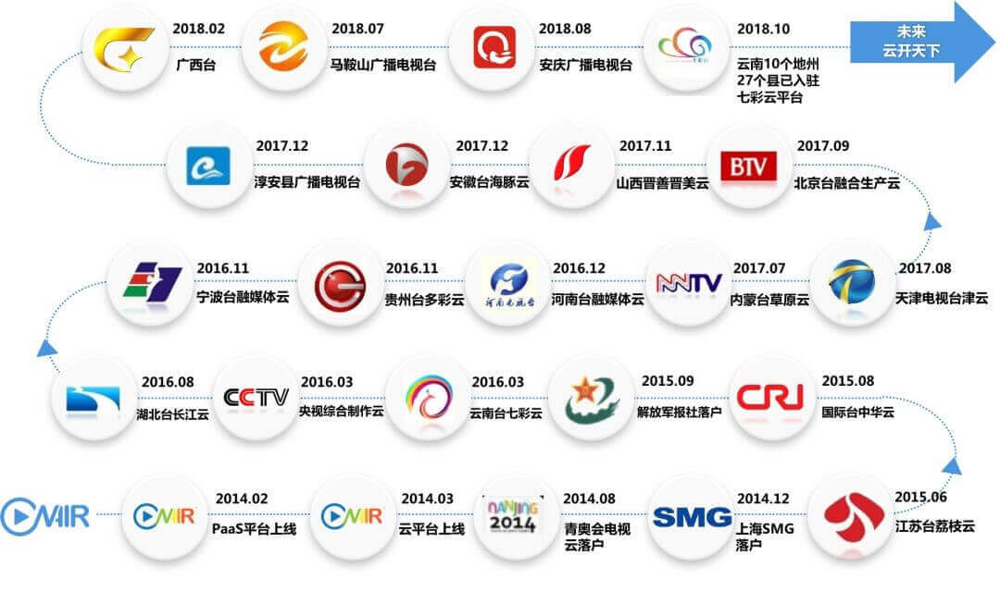

凡是过往，皆为序章 | 恭喜云视中标“中华云平台运维服务”项目！
转眼间又是一年
2019年即将到来
在这2018年的小尾巴上
云视又中标啦
这一次是“中华云平台运维服务”项目
早在2015年，云视就中标中国国际广播电台“中华云（新型全媒体融合平台）”项目，通过“中华云平台”帮助国际台实现媒体技术服务平台向覆盖全球的云媒体综合服务平台的转化，助力增强国际台的全球传播实力。该项目顺利完成，于2017年获得广播影视科技创新奖一等奖！
而此次的“中华云平台运维服务”项目，正是基于“中华云平台”的延伸，服务将重点围绕“中华云”新型全媒体融合平台展开，提供包含：基础资源运维、专用工具运维等多方面运维服务，以切实保障“中华云”平台高效、稳定、安全地运行，保持技术先进性，为国际台融媒体发展战略提供强有力的支撑。

时间从不厚此薄彼，云视一直深耕着视频云行业，现如今，云视在视频行业制高点——媒资行业中PAAS平台案例数居上游水平；视频云直播业务也已达到每天超300场，点击量超1000万，流量超50T。
一路走来，我们一直为成为最专业的视频云技术服务商而努力，我们从未忘记肩上的使命；一路成长，匠心筑梦，精益求精只为把产品打磨得更加优秀，功能更加完善，与客户需求更匹配，能够为客户创造出更大的价值；一个个项目和奖项是对云视当下的认可，更鼓舞我们砥砺前行。
凡是过往，皆为序章！2019年，云视将继续一往无前，秉承初心，不断创新，以专业视频云技术为客户服务，让视频应用更轻松！